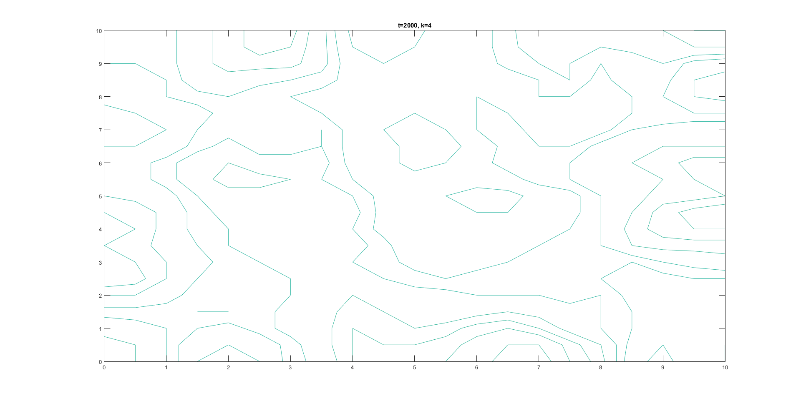
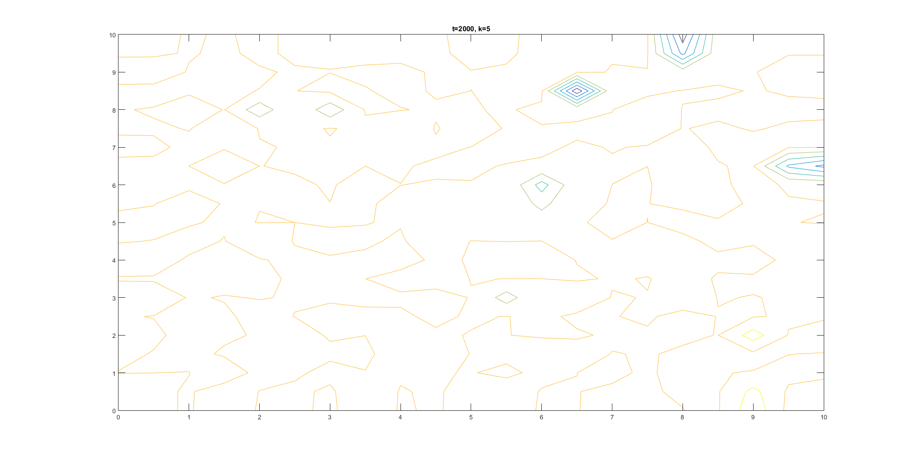
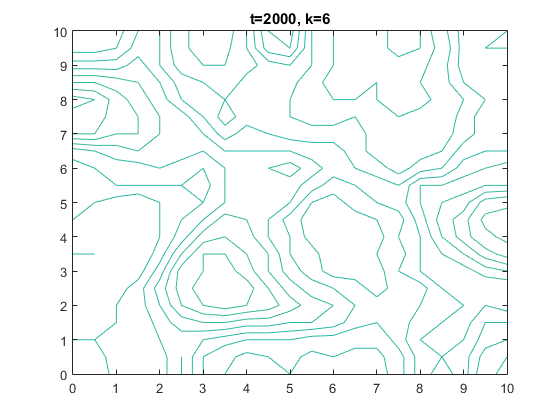
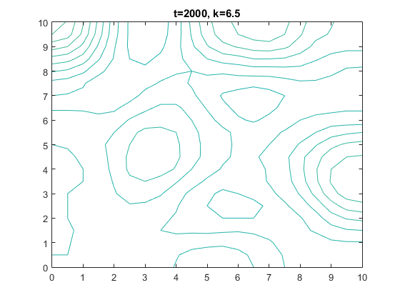
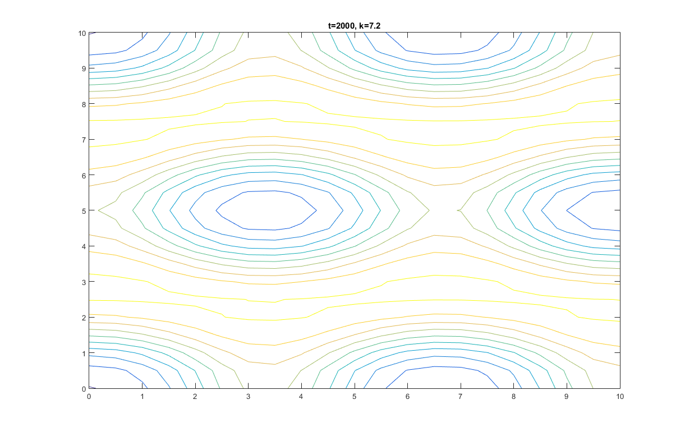
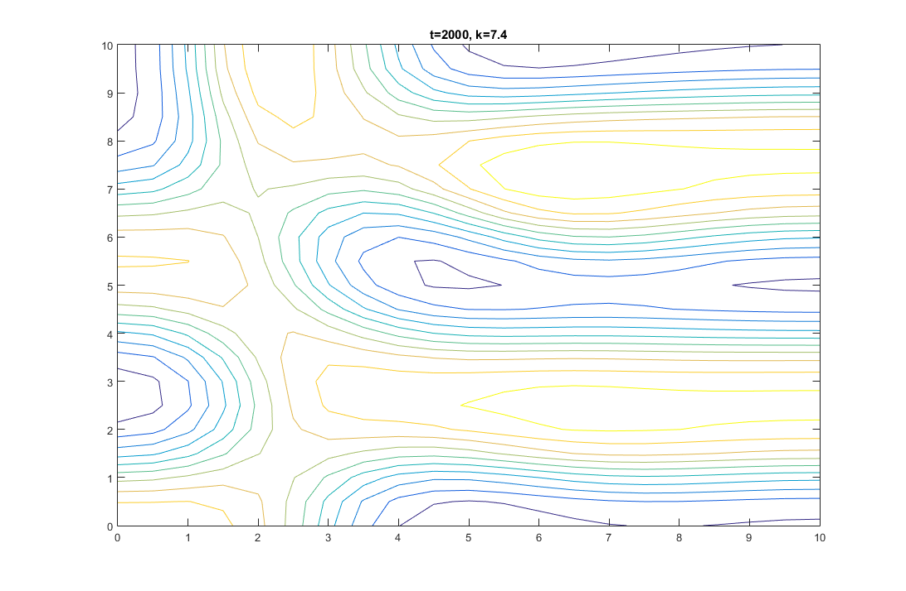
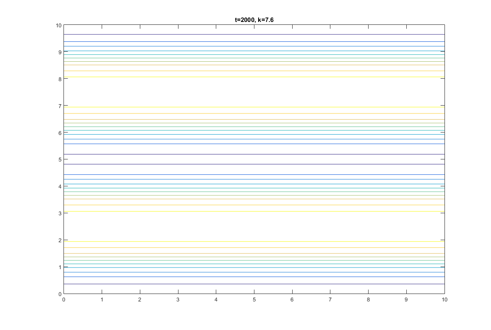

From a historical point of view, Allen Turing observed that various things in nature seemed to follow
these interesting visual patterns of having "stripes" or "spots". This includes looking at stratus clouds,
looking at leopards, looking at zebras, microscopic views of cells in plants and animals. So basically he
derived a model that describes the distribution of chemical concentrations from a 3-Dimensional point of view.
This model is a system of PDEs of the variables x and y. Through further investigation, you can determine where
instability of this system occurs in which produces interesting mixes of stripes and spots. From these same results,
we can determine where stability occurs (resulting in either spots or stripes, but not both). In our project,
we investigate the nature of adjusting various parameters, and seeing how that results in stability or instability;
and in the case of stability, see how long it takes for the concentration distribution \(p(x,y)\) to reach its stable
equilibrium value. The equations for the Brusselator are shown
below :
The p and q in the equations below represent two diffusion coeffiecients and the C and K are parameters.
The differnetial equations for the Brusselator has an equilibrium
solution at \(p=C\) and \(q=\frac{K}{C}\) . Since p and q are defined as constants, their derivatives
will be zero. The work is shown
below :
Stable solutions to the differnetial equations satisfy the following condition for the parameter k:
\begin{align}
K \le \left( 1+C \sqrt{\frac{D_p}{D_q}} \right) ^2 \\
\end{align}
Plugging in \(D_p=1,\ D_q=8,\ C=4.5\ \) yields that stable equilibriums will occur for all \(K \le 6.71\) for the given parameters.
Adopting the code from the text to the local machines lead to a few difficulties. The main difficult arose from
the fact that in order to replicate the figures from the text, 2000 steps were to be ran on a 40 x 40 grid. However, the computers in the lab were only capable of performing one
iteration of a step every 2 seconds. Therefore each figure would have taken slightly over an hour to produce. In order to decrease the amount of time needed per step, we edited the code
to not graph after each step and shortened our grid size to 10 x 10. These edits allowed us to produce 2000 steps in about 3 minutes, which is about 10 steps a second.
The graphs shown below are contour plots of the output of \(p(x,y)\) at t=2000 under the initial conditions shown in the overview.
In this section, the affect of making K satisfy the stability condition was explored by choosing \(K \le 6.71\) which was the condition for stability as discussed
in the overview. Overall, the graphs have less stripes and spots as they appear to have less distinguishable patterns.




In the next step, we consider what happens when changing the parameter K (within the range of stability),
and investigating what numerical values of time, denoted T, brings the chemical concentrations of p within .01
of the equilibrium concentration of C=4.5. We are in particular, considering what the least value for T is for
each K value. The code, BrusselatorT , solves for the least value of T and the
Trun created the plot from \(K=[4,6.66]\) with 30 steps.
The following plots demonstrate the contour curves of \(p(x,y)\) when K is in the instable range. The instability produces a fusion of spots and stripes which are non-uniformly distributed.
Notice the changes of the plots for small changes of K.



The following video shows the output at \(t=2000\) between \(K=7\) to \(K=8\).
Since these values of K are in the instability range, the output drastically changes
with small changes in K. In this video, our \(\Delta K=0.01\). The video below is edited
to have a lower frame rate to make it easier to view. However, this lead to a drop in some
of the actual frames which may show a larger \(\Delta K\) than expected.